CS 463G & CS 663
(Intro to) AI
Lecture 6: Uniform-Cost Search
Fall 2026
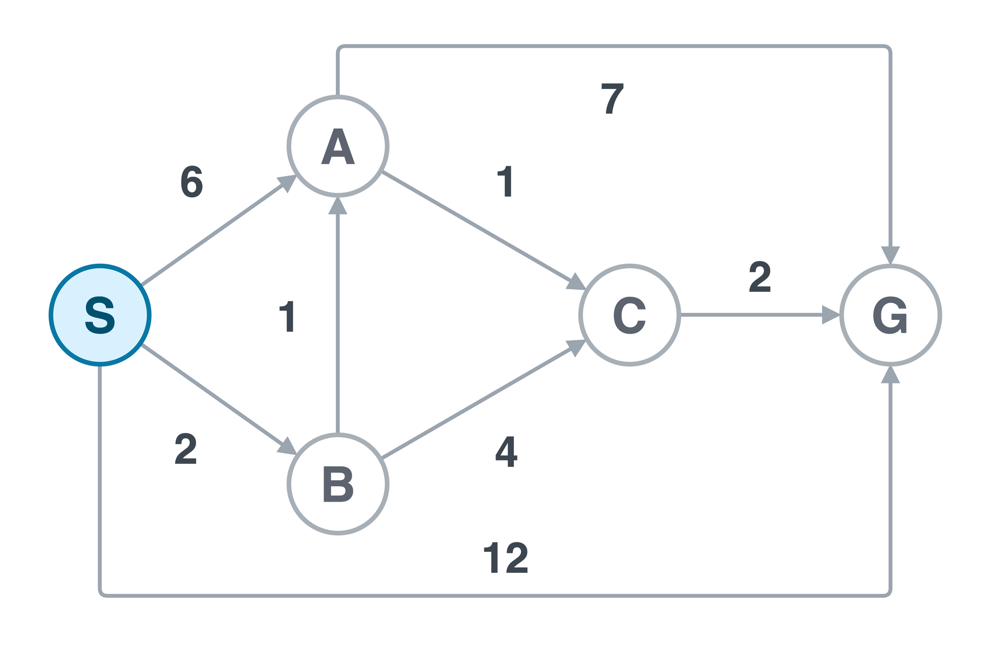
Breadth-first search (BFS) minimizes the number of edges.
The direct route S \to G has one edge, but costs 12.
Uniform-cost search (UCS) minimizes the sum of edge costs.
S \to B \to A \to C \to G costs 2+1+1+2=6.
Fewer actions do not necessarily mean a cheaper solution.
g(n)=\sum_{\text{edges on the current path to }n} c(u,v)
| After expanding S | Path cost g | Depth |
|---|---|---|
| S \to B | 2 | 1 |
| S \to A | 6 | 1 |
| S \to G | 12 | 1 |
With equal positive edge costs, ordering by cost is ordering by depth, as in BFS.
Start at S, seek G. Update the frontier and best costs after processing each node.
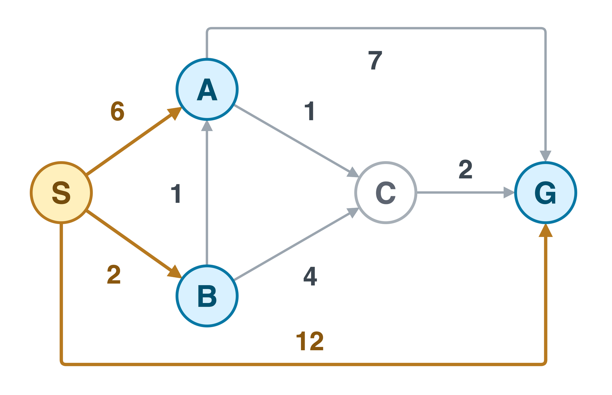
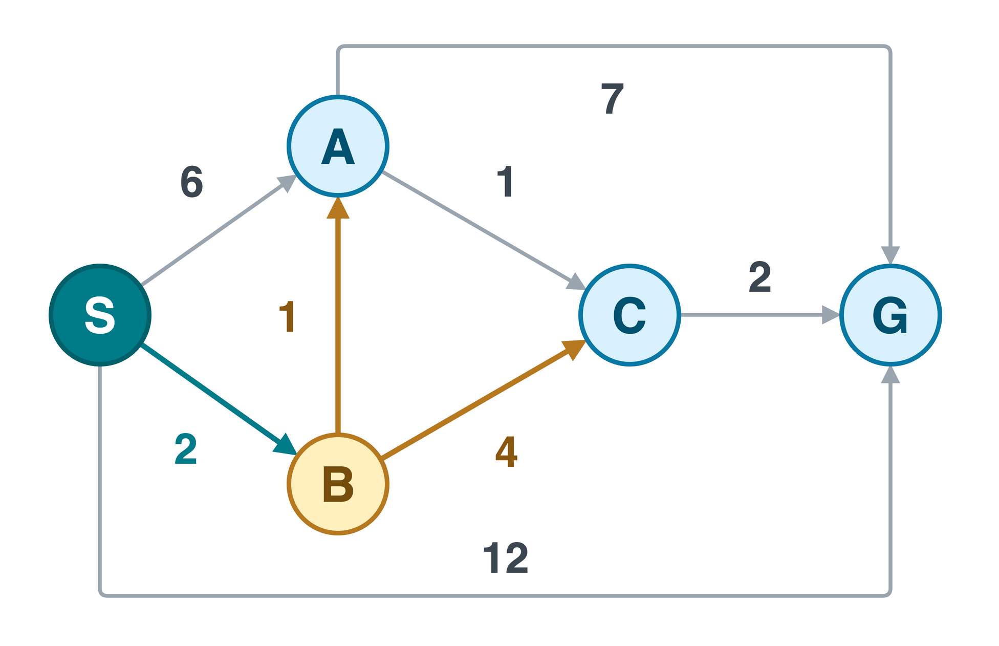
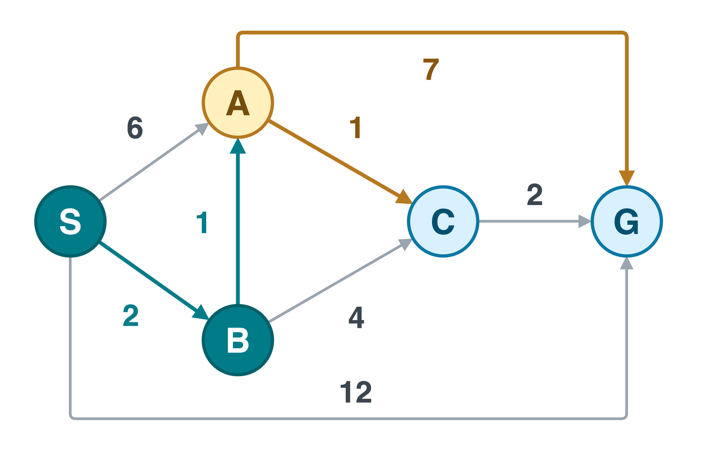
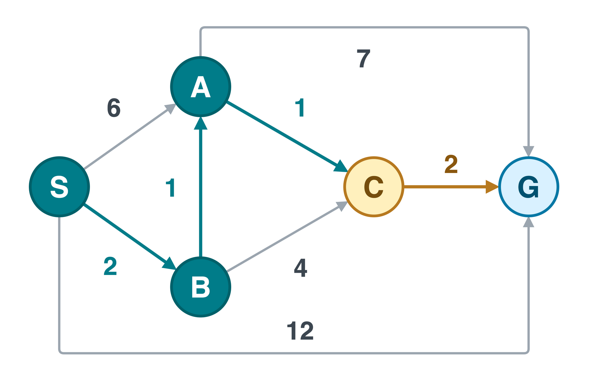
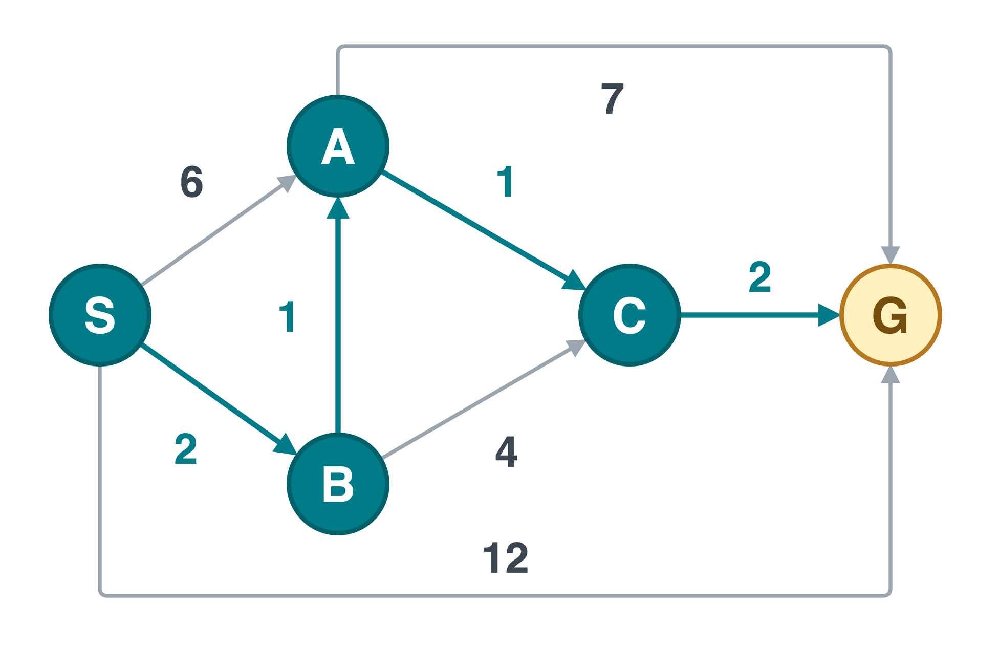
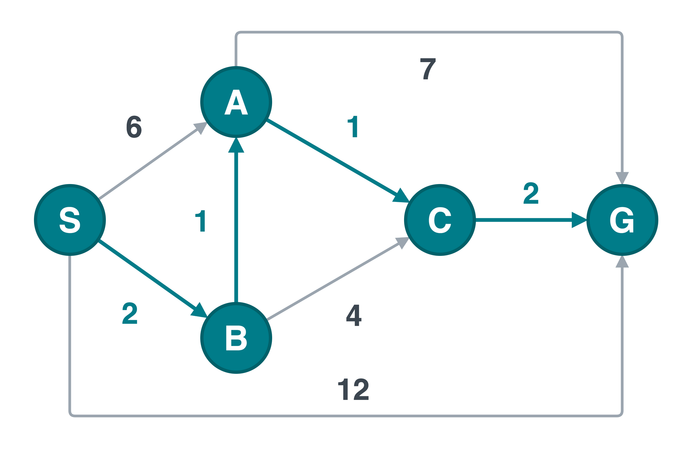
Gold edges: improvements this step. Final frame: the least-cost route.
bestGold = updated| S | A | B | C | G |
|---|---|---|---|---|
| 0 | ∞ | ∞ | ∞ | ∞ |
| 0 | 6 | 2 | ∞ | 12 |
| 0 | 3 | 2 | 6 | 12 |
| 0 | 3 | 2 | 4 | 10 |
| 0 | 3 | 2 | 4 | 6 |
| 0 | 3 | 2 | 4 | 6 |
| Remove | Current frontier |
|---|---|
| Start | [S:0] |
| S:0 | [B:2, A:6, G:12] |
| B:2 | [A:3, C:6, G:12] |
| A:3 | [C:4, G:10] |
| C:4 | [G:6] |
| G:6 | Return goal, cost 6 |
Frontier: cheapest first, node:cost. Stale entries omitted.
Final route: S \to B \to A \to C \to G. Its cost is 6, even though G was first discovered at cost 12.
First discovery: S \to A, cost 6.
Later discovery: S \to B \to A, cost 3.
\begin{aligned} \text{candidate} &= g(B)+c(B,A) \\ &=2+1=3<6. \end{aligned}
Relaxation: replace a recorded route when the candidate is cheaper. Update its cost and parent together.
Unlike BFS with unit costs, UCS cannot finalize a node when it is first discovered.
Expanding S discovers G at cost 10.
Should the search stop?
No. The frontier still contains A at cost 1.
Expanding A improves the route to G to 1+1=2.
Return G only when its current cheapest entry is removed.
For nonnegative costs, removal finalizes the cost; discovery only proposes a route.
| Node | Best cost | Parent |
|---|---|---|
| S | 0 | None |
| B | 2 | S |
| A | 3 | B |
| C | 4 | A |
| G | 6 | C |
Follow parents backward from G, then reverse the result.
Backward: G \to C \to A \to B \to S. Returned route: S \to B \to A \to C \to G.
cost: the popped entry’s stored cost. best[u]: the cheapest cost found so far for u.
Old entry (6, A) still records 6, but best[A] is now 3. Skip the old entry when it is removed.
For each outgoing edge u\to v, compare the new route against the stored cost.
At B: the candidate for A is 2+1=3. Replace best[A] = 6 with 3, set parent[A] = B, and insert (3, A).
The strict comparison avoids reinserting equal-cost routes, including around zero-cost cycles.
Inserting (3, A) does not remove the older (6, A). After processing C, the heap can still contain:
| Entry, in removal order | Current best cost | Action |
|---|---|---|
(6, A) |
3 | Skip: superseded by a cheaper route |
(6, C) |
4 | Skip: superseded by a cheaper route |
(6, G) |
6 | Accept: current entry for the goal |
(10, G), (12, G) |
6 | Never needed after UCS returns |
Equal costs are ordered alphabetically here. The table is sorted for explanation; a heap’s internal array is not fully sorted.
An obsolete entry is a stale entry. Removing one is not a new node expansion.
Assume nonnegative edge costs. The exact cost != best[u] check is not required in every UCS implementation.
| Method | How repeated work is avoided |
|---|---|
| Cost check (these slides) | Insert improved entries; skip an entry whose stored cost differs from best[u]. |
| Finalized set (notebook) | On removal, skip a node already finalized; otherwise finalize it and test the goal. |
| Decrease-key | Keep one pending entry per node and lower its priority on improvement. No obsolete entry remains. |
In this pseudocode, strict cost-improvement updates already make stale expansions redundant. Removing the check keeps the correct result, but can waste work.
For UCS, finalize a node on removal, not when it is first discovered.
Assume all edge costs are nonnegative. Let the next current entry have cost k.
The node’s cost is final when its current entry is removed. In particular, an accepted goal has optimal cost.
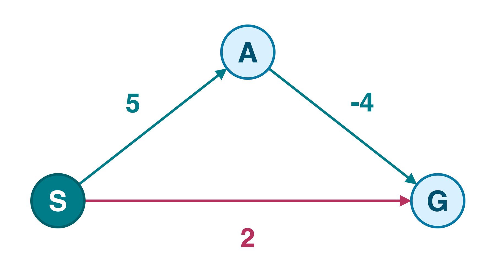
The queue first contains G:2 and A:5.
UCS removes the goal at cost 2.
But the route through A costs
5+(-4)=1.
A more expensive prefix can now lead to a cheaper solution.
Nonnegative includes zero. Negative edges require a different shortest-path method, such as Bellman-Ford.
| Search setting | What ensures UCS eventually finishes? |
|---|---|
| Finite graph | Nonnegative costs and proper duplicate handling. Zero-cost edges are allowed. |
| Potentially infinite search space | Finite branching and a positive lower bound c(u,v)\ge\epsilon>0, with a finite-cost goal. |
An infinite chain of zero-cost actions could keep UCS busy forever, while a goal with cost 1 waits in the frontier.
Optimality of a returned goal and eventual discovery of a goal are different guarantees.
Let V be the number of vertices and E the number of edges. For the duplicate-entry binary heap used in the pseudocode:
| Resource | Bound |
|---|---|
| Time | O\big((V+E)\log(V+E)\big) |
| Extra storage | O(V+E), including stale heap entries |
Stop when a current goal entry is removed. Return its route and cost.
Remove the goal-return condition and continue until the queue is empty. Return all best distances and parents.
| Destination | Distance from S |
|---|---|
| S | 0 |
| B | 2 |
| A | 3 |
| C | 4 |
| G | 6 |
This is single-source shortest paths, not shortest paths between every pair of nodes.
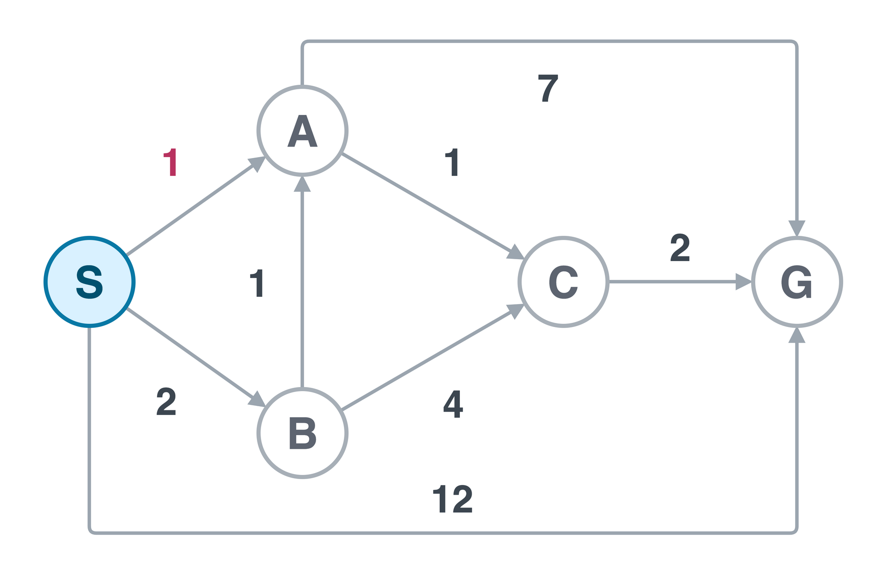
Only c(S,A) changes: 6 becomes 1.
Break equal-cost ties alphabetically.
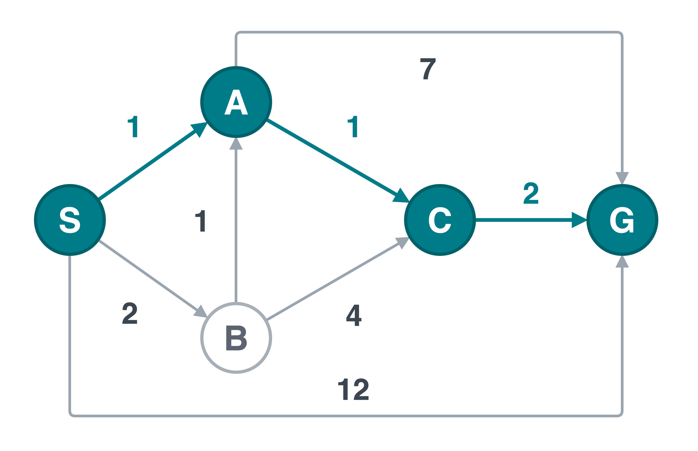
After S: [A:1,\ B:2,\ G:12].
After A: [B:2,\ C:2,\ G:8].
B comes before C only because of the tie rule.
C improves G to 4.
Return S\to A\to C\to G, cost 1+1+2=4.
Tie-breaking can change the expansion order, but not the optimal solution cost.
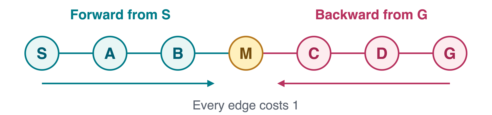
For unit costs, layer-by-layer bidirectional BFS can find a shortest route without searching all the way from one side.
With branching factor b and solution depth d, a balanced search suggests:
\underbrace{b^d}_{\text{one direction}} \quad\text{versus}\quad \underbrace{2b^{d/2}}_{\text{two directions}}.
| Requirement | Why it matters |
|---|---|
| A known goal, or manageable goal set | The backward search needs a starting point. |
| Efficient predecessor generation | Reversing actions may be difficult. |
| Suitable stopping rule | With weights, the first meeting need not be the cheapest route. |
The savings are a useful tree-like estimate, not a guarantee for every graph.
Uniform-cost search and Dijkstra notebook
| In the slides | In the notebook |
|---|---|
| Directed worked graph | Random undirected weighted graph |
| Best-cost updates; skip stale costs | Insert candidates; skip already finalized nodes |
| Parent changes on improvement | Parent recorded on the first valid removal |
| Cheapest-first frontier | Python’s heapq min-heap |
The notebook uses the same correctness principle: finalize on removal, never on first discovery.
Compare the UCS route to node 3 with Dijkstra’s route from the same source. Do their costs agree?
A goal enters the queue with cost 20. Can we stop?
No. Another pending route may reach it more cheaply. Test the goal after removing its current entry.
Are zero-cost edges forbidden?
No, not on a finite graph with proper duplicate handling. An infinite zero-cost region can prevent progress toward a positive-cost goal.
If all edges cost 3, will UCS beat BFS in solution cost?
No. Every depth-d route costs 3d, so both minimize the number of edges. Equal-cost routes can differ.
The frontier holds possibilities. Removal, not discovery, certifies the cheapest one.